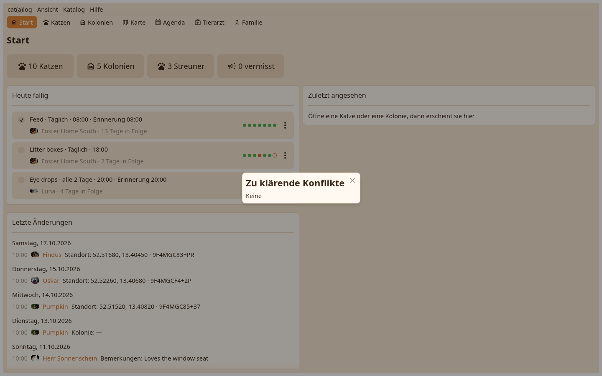

Der Schreibtisch entscheidet einen Konflikt auf seiner Zeile, führt zwei Datensätze mit dem von dir gewählten Überlebenden zusammen und verschiebt eine Katze oder ein Zuhause in einen anderen Katalog auf demselben Rechner.

Beide Werte mit wer und wann; ein Klick behält einen. Das Fenster bleibt offen mit den noch zu entscheidenden Konflikten. Katalog-Menü, oder das Ankunftsfenster nach einem Abgleich.
Dubletten finden listet Paare nach ID oder nach Name und Details. Dies zusammenführen in… im Aktionsmenü einer Seite oder im Menü einer Karte fragt nach dem Überlebenden und sagt, was sich bewegt; zuerst wird ein Moment festgehalten.
In einen anderen Katalog verschieben auf einer Karte, einer Seite oder den markierten Zeilen: wähle den Katalog, und die Katzen, oder das Zuhause mit seinen Katzen, ziehen hinüber, unter dem Ziel neu gestempelt.